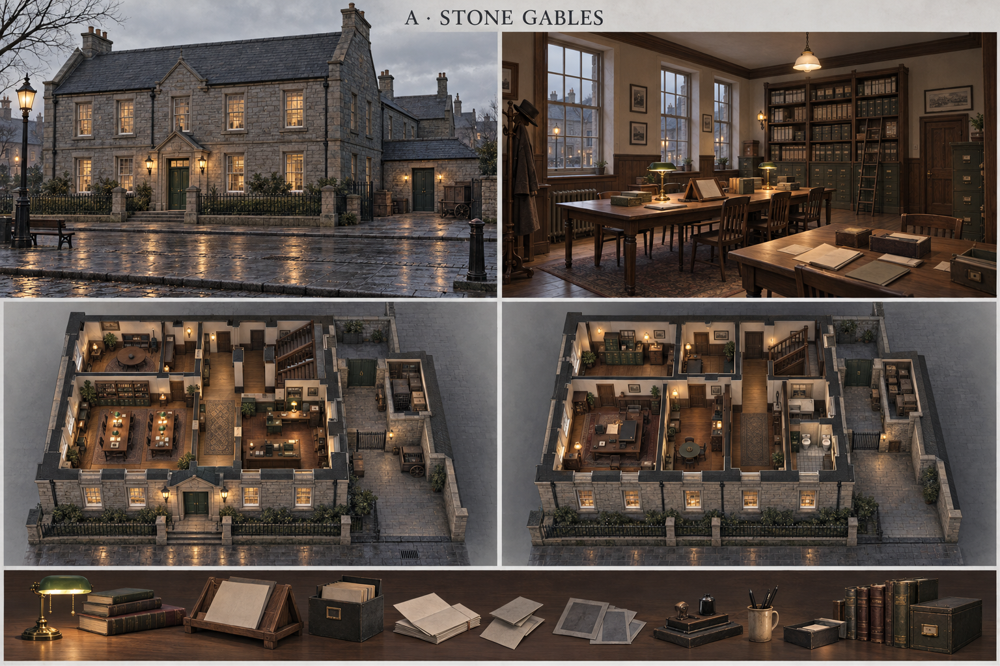
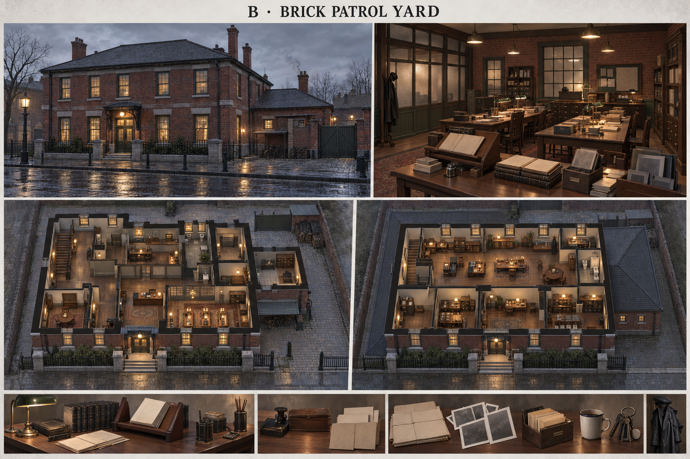
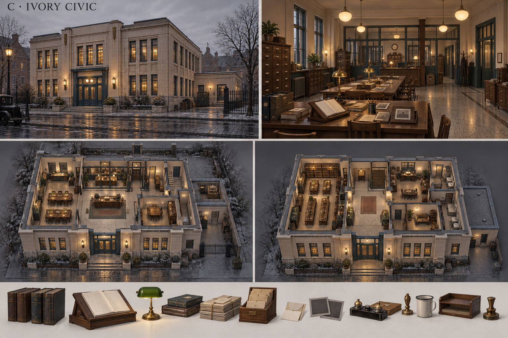
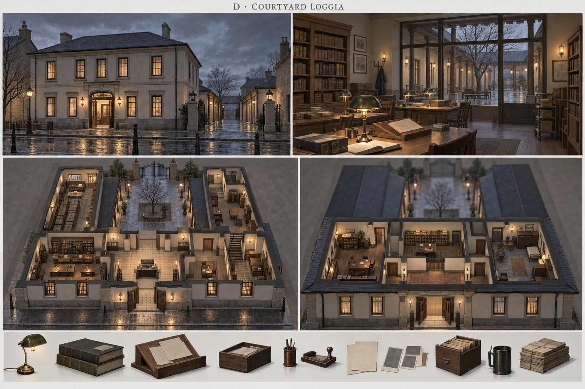
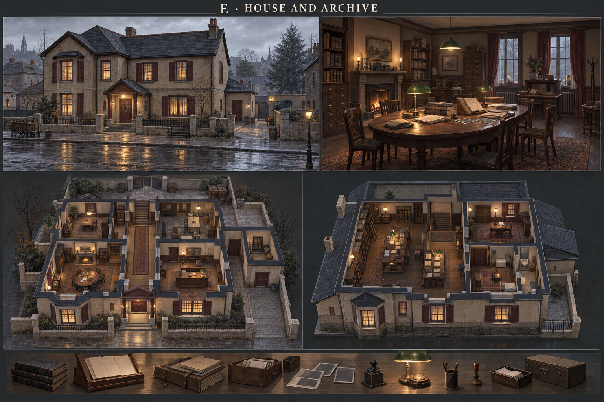

建筑体量 主楼23×12m，两层；东后翼7.59×7m，一层；最高屋脊建议9.8m。
适合的体验 优先推荐。最容易融入已有米白钟楼和胡桃木铺面，前厅友好、后区克制。
空间叙事 从光线温暖的阅览室看见后方安静回廊，旧羁押室只占东后翼末端，保留主角先前被怀疑的空间感。
第一人称视线 进入门厅向左就见两张阅读桌；透过前窗看到街道，向后可看见通往院落的门。
后院与后门 西北后院保留通向北后巷的1.8m目标通道；东翼外设小煤木棚，空床高窗朝院。
声音 石地入口脚步转成木地板；纸页声和远处闷雨。
取舍 传统稳妥，外轮廓的视觉冲击较弱。
暖灰石苔绿门深石板橡木
两层布局与浏览动线
公共前门 → 接待门厅 → 阅览桌 → 横厅 → 后门／院落 → 北后巷。二层楼梯为可选办公与档案浏览路线，核心查证可在首层完成。
点击平面色块查看房间用途。
每个房间的尺寸和陈设
| 楼层 | 房间 | 净区估算 | 陈设与用途 |
|---|
| 一层 | 公开案卷阅览 | 9.85×6.6m | 两张1.6×0.8m橡木桌，窗边文件架、北墙分类柜；柜到桌和桌间目标净距≥1.2m。 |
| 一层 | 接待与值班 | 6.25×6.6m | L形柜台背靠东侧，柜台侧方通往横厅；阶段报告小桌靠门厅。 |
| 一层 | 双跑楼梯 | 3.6×5.6m | 入口在横厅东端；与二层共用同一投影。 |
| 一层 | 问询室 | 6.1×2.6m | 一张桌、三把椅、可开门；不设置双向镜或隐藏答题机关。 |
| 一层 | 盥洗间 | 2.05×2.6m | 独立盆和小厕位；窗面向后院。 |
| 一层 | 值班与保管登记 | 8.75×2.6m | 两张短桌与登记柜；其东端接后翼回廊。 |
| 一层 | 物证储存 | 4.79×3m | 封存柜靠东墙；获准照片另在公共桌上看。 |
| 一层 | 旧羁押室 | 4.79×3.2m | 旧床、盆和高窗；一间足够，不布置第二囚犯或新证物。 |
| 一层 | 候问／接待侧席 | 3.6×5.6m | 长凳、衣架与小桌；可经相邻公共房间进横厅，不放唯一必需材料。 |
| 二层 | 负责人办公室 | 7.1×5.6m | 办公桌面向窗而非入口；不用职位摆设制造审判气氛。 |
| 二层 | 调查办公／誊录 | 8.4×5.6m | 档案誊录与工作桌，所有纸页正文沿用批准合同。 |
| 二层 | 值班休息 | 6.7×5.6m | 两张单人休息榻、衣柜和小桌；不设无用的第三层。 |
| 二层 | 档案储存 | 15.5×2.6m | 沿北墙浅柜、中央单排通道；按证人、日期、物证建立索引。 |
| 二层 | 盥洗／储藏 | 3.1×2.6m | 盥洗盆、清洁柜，与一层湿区集中。 |
| 二层 | 双跑楼梯 | 3.6×5.6m | 两层楼梯投影一致，建议总升高3.4m，踏步高约0.17m、宽0.28m；后续模型实测。 |
外观板用于选择建筑气质。中文平面给出功能组织；精确门窗、墙厚、家具净距与楼梯仍需同源建模。院落浏览可以反向进行。

建筑体量 主楼23×12m，两层低四坡顶；东后翼7.59×7m，一层；屋脊建议8.6m。
适合的体验 适合强调警察局日常工作、人员活动和可信的办案后台。
空间叙事 接待、誊录、查档同时出现在前区；磨损雨衣架、靴托和车棚说明这是一处持续工作的地方。
第一人称视线 站在公共阅读桌能看到玻璃隔断后的值班桌，但无法从桌上直接看到任何推理答案。
后院与后门 院内自行车棚、雨衣晾挂位和煤木储区沿东边，西侧清晰连至北门。
声音 砖地鞋声、柜抽屉轻撞、椅脚和窗外雨棚滴水。
取舍 若道具太密会遮挡材料；阅览区必须保留宽视线和净通道。
暗红砖灰绿木作石灰线脚深松木
两层布局与浏览动线
公共前门 → 接待门厅 → 阅览桌 → 横厅 → 后门／院落 → 北后巷。二层楼梯为可选办公与档案浏览路线，核心查证可在首层完成。
点击平面色块查看房间用途。
每个房间的尺寸和陈设
| 楼层 | 房间 | 净区估算 | 陈设与用途 |
|---|
| 一层 | 问询室 | 3.6×6.6m | 靠西前窗，桌椅与柜子简洁，门朝横厅。 |
| 一层 | 接待／誊录 | 6.5×6.6m | 两张誊录桌与接待台，玻璃木隔断隔开后区。 |
| 一层 | 公开案卷阅览 | 6.5×6.6m | 矩形并排对照桌与抽屉柜；不被值班桌夹成窄缝。 |
| 一层 | 双跑楼梯 | 3.6×5.6m | 楼梯为矩形两跑，投影贯穿上下层。 |
| 一层 | 巡警文书 | 6.1×2.6m | 雨衣、巡逻书夹和靴托；图示物件不增加历史巡逻日志。 |
| 一层 | 盥洗间 | 2.3×2.6m | 湿区集中布置，清洁柜贴墙。 |
| 一层 | 保管登记／值班 | 8.5×2.6m | 登记桌连到后翼，行政通道与公众阅览分开。 |
| 一层 | 存物室 | 4.79×3m | 文件盒和封存柜，不生成可读的额外指控。 |
| 一层 | 旧羁押室 | 4.79×3.2m | 窄高窗、空床和盆。 |
| 一层 | 候问／接待侧席 | 3.6×5.6m | 长凳、衣架与小桌；可经相邻公共房间进横厅，不放唯一必需材料。 |
| 二层 | 巡警事务办公室 | 7.1×5.6m | 办公桌面向窗而非入口；不用职位摆设制造审判气氛。 |
| 二层 | 巡警誊录／文书 | 8.4×5.6m | 档案誊录与工作桌，所有纸页正文沿用批准合同。 |
| 二层 | 值班休息 | 6.7×5.6m | 两张单人休息榻、衣柜和小桌；不设无用的第三层。 |
| 二层 | 档案储存 | 15.5×2.6m | 沿北墙浅柜、中央单排通道；按证人、日期、物证建立索引。 |
| 二层 | 盥洗／储藏 | 3.1×2.6m | 盥洗盆、清洁柜，与一层湿区集中。 |
| 二层 | 双跑楼梯 | 3.6×5.6m | 两层楼梯投影一致，建议总升高3.4m，踏步高约0.17m、宽0.28m；后续模型实测。 |
外观板用于选择建筑气质。中文平面给出功能组织；精确门窗、墙厚、家具净距与楼梯仍需同源建模。院落浏览可以反向进行。

建筑体量 23×12m两层平顶主体；东后翼7.59×7m，一层；主檐建议7.4m。
适合的体验 适合给小镇增加一个辨识度强、秩序清晰的公共机构。
空间叙事 案卷桌与报告小桌在视线开阔的首层；冷静的结构强化玩家对摘要和记录的审视，不使用压迫式审讯舞台。
第一人称视线 中央门厅一眼看到左边阅览桌和右边问询室，后部玻璃木隔断透露办公室层次。
后院与后门 整齐硬院与一个小储棚；入口、院门和灯具采用统一窄边几何造型。
声音 石质地面短混响、隔断门轻响，阅读桌附近减少空厅回声。
取舍 最需要控制年代感，避免现代玻璃幕墙、冷白灯和大面积塑料。
象牙白石油蓝胡桃木旧黄铜
两层布局与浏览动线
公共前门 → 接待门厅 → 阅览桌 → 横厅 → 后门／院落 → 北后巷。二层楼梯为可选办公与档案浏览路线，核心查证可在首层完成。
点击平面色块查看房间用途。
每个房间的尺寸和陈设
| 楼层 | 房间 | 净区估算 | 陈设与用途 |
|---|
| 一层 | 公开阅览大厅 | 8.6×6.6m | 两张平行阅读桌；文件柜低于窗台视线，入口能看清阅览位。 |
| 一层 | 问询室 | 6×3.6m | 可见独立门，保证安静但不演成审讯谜题。 |
| 一层 | 接待／报告 | 6×3m | 低柜台面向中央厅；公开报告桌靠近大厅。 |
| 一层 | 双跑楼梯 | 3.6×5.6m | 两层一致，石油蓝木扶手与窗边平台。 |
| 一层 | 办公区 | 6.1×2.6m | 木玻璃隔断后誊录桌，不藏强制证据。 |
| 一层 | 盥洗间 | 2.3×2.6m | 独立厕位与盆。 |
| 一层 | 值班／保管 | 8.5×2.6m | 共享后翼入口。 |
| 一层 | 封存物证室 | 4.79×3m | 近中性墙色、深木柜，正式物证使用既有合同。 |
| 一层 | 旧羁押室 | 4.79×3.2m | 后翼一层，完全无假二楼。 |
| 一层 | 候问／接待侧席 | 3.6×5.6m | 长凳、衣架与小桌；可经相邻公共房间进横厅，不放唯一必需材料。 |
| 二层 | 档案编目室 | 7.1×5.6m | 办公桌面向窗而非入口；不用职位摆设制造审判气氛。 |
| 二层 | 调查办公室 | 8.4×5.6m | 档案誊录与工作桌，所有纸页正文沿用批准合同。 |
| 二层 | 值班休息 | 6.7×5.6m | 两张单人休息榻、衣柜和小桌；不设无用的第三层。 |
| 二层 | 档案储存 | 15.5×2.6m | 沿北墙浅柜、中央单排通道；按证人、日期、物证建立索引。 |
| 二层 | 盥洗／储藏 | 3.1×2.6m | 盥洗盆、清洁柜，与一层湿区集中。 |
| 二层 | 双跑楼梯 | 3.6×5.6m | 两层楼梯投影一致，建议总升高3.4m，踏步高约0.17m、宽0.28m；后续模型实测。 |
外观板用于选择建筑气质。中文平面给出功能组织；精确门窗、墙厚、家具净距与楼梯仍需同源建模。院落浏览可以反向进行。

建筑体量 23×12m两层前楼；西、东后翼各5.5×12m一层；12×12m露天院，翼内侧各留1.5m回廊；主楼屋脊8.8m。
适合的体验 空间体验最强。适合把警署做成值得反复停留和查看的完整地点。
空间叙事 查阅、问询和后勤沿同一院落组织。屋顶下静听雨，转过回廊看见旧羁押室，空间层次自然传达制度与个人处境。
第一人称视线 阅读室朝院窗可见真实回廊和树；两侧回廊互相可见，院北不加封闭建筑以保持出口。
后院与后门 前楼后方院宽12m，回廊后实际露天净区约9×12m；院北保留后勤硬院与北门通道。
声音 院内雨声最明显，回廊有滴水，阅读室关门后是闷雨和纸声。
取舍 需要修改B10后翼形状并新增西翼；门窗、遮雨和多门声学工作最多。
石灰灰泥浅橡木冷灰石黑铁
两层布局与浏览动线
公共前门 → 接待门厅 → 阅览桌 → 横厅 → 后门／院落 → 北后巷。二层楼梯为可选办公与档案浏览路线，核心查证可在首层完成。
点击平面色块查看房间用途。
每个房间的尺寸和陈设
| 楼层 | 房间 | 净区估算 | 陈设与用途 |
|---|
| 一层 | 案卷阅览 | 9.6×6.6m | 前桌阅读、北面朝院窗，资料随时可读。 |
| 一层 | 问询室 | 6×6.6m | 不与后翼羁押空间共门。 |
| 一层 | 双跑楼梯 | 3.6×5.6m | 只上前楼二层；后翼屋面不能当二层走。 |
| 一层 | 档案誊录 | 6.1×2.6m | 面院小桌，框景通向回廊。 |
| 一层 | 盥洗间 | 2.3×2.6m | 集中湿区。 |
| 一层 | 值班／接待 | 8.5×2.6m | 负责公共文书，不能阻住院门。 |
| 一层 | 资料室分馆 | 4.7×5.6m | 左翼一层延伸阅览；本MVP材料不是只能在此获得。 |
| 一层 | 装订档案库 | 4.7×5.6m | 书架留≥1.2m柜前通道，门朝西回廊。 |
| 一层 | 巡警值班 | 4.7×3.6m | 朝院玻璃窗与屋下小门。 |
| 一层 | 物证室 | 4.7×3.6m | 门朝东回廊，独立于旧羁押室。 |
| 一层 | 旧羁押室 | 4.7×4m | 高窗朝北后院，空床一张。 |
| 一层 | 候问／接待侧席 | 3.6×5.6m | 长凳、衣架与小桌；可经相邻公共房间进横厅，不放唯一必需材料。 |
| 二层 | 负责人办公室 | 7.1×5.6m | 办公桌面向窗而非入口；不用职位摆设制造审判气氛。 |
| 二层 | 调查办公／誊录 | 8.4×5.6m | 档案誊录与工作桌，所有纸页正文沿用批准合同。 |
| 二层 | 值班休息 | 6.7×5.6m | 两张单人休息榻、衣柜和小桌；不设无用的第三层。 |
| 二层 | 档案储存 | 15.5×2.6m | 沿北墙浅柜、中央单排通道；按证人、日期、物证建立索引。 |
| 二层 | 盥洗／储藏 | 3.1×2.6m | 盥洗盆、清洁柜，与一层湿区集中。 |
| 二层 | 双跑楼梯 | 3.6×5.6m | 两层楼梯投影一致，建议总升高3.4m，踏步高约0.17m、宽0.28m；后续模型实测。 |
外观板用于选择建筑气质。中文平面给出功能组织；精确门窗、墙厚、家具净距与楼梯仍需同源建模。院落浏览可以反向进行。
方案 E旧宅改造档案警署
酒红木作的旧宅与楼上档案间

建筑体量 主楼18×12m，两层、在23m宅地内居中；东后翼6×7m一层；屋脊建议9.2m。
适合的体验 最有生活感和人物情绪。适合小镇资源有限、长期借旧房办公的气质。
空间叙事 原客厅变阅览室、原餐厅变接待室；楼上整理旧档，住宅式火炉和窗帘让制度空间带有日常质地。
第一人称视线 从门厅左侧看见椭圆阅读桌和壁炉，二楼档案间由楼梯直达，楼下仍能取得全部核心材料。
后院与后门 两侧各约2.5m退界；后院小花园和储物棚；北门通道保留，前门世界坐标保持原位。
声音 分区木地板的轻微吱响、壁炉低声、楼梯和柜门；不做恐怖惊吓。
取舍 需要缩小现有B10主楼；避免过多家居装饰淹没警署的公共辨识。
暖灰旧灰泥酒红木门深胡桃木暖灯色
两层布局与浏览动线
公共前门 → 接待门厅 → 阅览桌 → 横厅 → 后门／院落 → 北后巷。二层楼梯为可选办公与档案浏览路线，核心查证可在首层完成。
点击平面色块查看房间用途。
每个房间的尺寸和陈设
| 楼层 | 房间 | 净区估算 | 陈设与用途 |
|---|
| 一层 | 旧客厅阅览 | 7.6×6.6m | 椭圆桌长2.4m，壁炉靠外墙，窗帘收在窗洞旁；留直接阅读通道。 |
| 一层 | 旧餐厅接待 | 4.4×6.6m | 台面、目录柜和报告小桌，避免演成豪宅。 |
| 一层 | 双跑楼梯 | 3.2×5.6m | 实际楼梯与二层一一对应；楼梯脚步为轻微旧木声。 |
| 一层 | 问询室 | 3.6×2.6m | 原后侧小客厅，三把椅和木桌。 |
| 一层 | 盥洗间 | 2.3×2.6m | 保留住宅式湿区但换为公共使用。 |
| 一层 | 保管／值班 | 6.4×2.6m | 连通东后翼短廊。 |
| 一层 | 存物室 | 3.7×3m | 原后翼储物房，正式材料副本放前客厅。 |
| 一层 | 旧羁押室 | 3.7×3.2m | 改造的小房，无地下牢房。 |
| 二层 | 楼上档案阅览 | 10.6×6.6m | 两张誊录桌与沿墙柜；可选扩展阅读，核心材料仍在楼下。 |
| 二层 | 小办公室 | 6.6×5.6m | 一桌一柜，可见窗对应旧宅二层房。 |
| 二层 | 值班休息 | 10.6×2.6m | 休息榻与茶桌，保留生活感。 |
| 二层 | 盥洗／储藏 | 3.4×2.6m | 盆与清洁柜。 |
| 二层 | 双跑楼梯 | 3.2×5.6m | 上下层投影保持一致。 |
外观板用于选择建筑气质。中文平面给出功能组织；精确门窗、墙厚、家具净距与楼梯仍需同源建模。院落浏览可以反向进行。
五案共用的剧情和交互设计
案卷怎样支持玩家调查
原稿的律师申请门槛由现行自由探索规则覆盖。查阅案卷不依赖同行者、先访NPC或访问次数。
E01继续在广场案卷桌；E08继续在车站资料桌。警署可提供同ID的可选查阅副本，收集去重，不迁移当前证据来源。
E08来自另一镇巡警记录；本镇只能展示有来源的调取副本，不能画成本镇警员原簿。
巡警原簿可确定问路日期，不强制再去警署领取第二份才能提交；修灯记录作为另一路核对材料。
全剧中的情夫工单、客户证词和旧信等可预留柜格，正式正文与证物ID另立合同；不自动接入当前10证物MVP。
蒙太奇为玩家可见的导演镜头，不放进警署照片墙、监控或警方证据袋。
羁押室为空置旧空间；保释后的主角不被重新关押。新警员仅为岗位设计，不给姓名、历史路线或新不在场证明。
公开材料桌：案卷摘要副本、丈夫陈述、残信照片；只排版已确认正文。
对照桌：两只等高文件架，可分别打开摘要与巡警记录副本；翻页和日期标题由玩家自行读取。
分类柜：证人／日期／物证的中性索引；不使用真证据、伪造、关键线索等标签。
报告处：靠入口的一侧小桌，允许随时提交阶段判断或收起继续调查；不以离开警署触发结局。
实体门 纸面 灯具和阶段报告
| 物件 | 动作 | 状态与边界 |
|---|
| 前后实体门 | E 开／关，双向可用 | 保存门状态；防夹与真实碰撞。 |
| 案卷与照片 | 拿起／放大／翻页／关闭，保留出处和页序 | 查阅状态与已获得证物按稳定ID保存。 |
| 分类抽屉 | 拉开／推回，抽屉与柜体拆件 | 氛围动作；不凭打开柜子授予新案件事实。 |
| 阅读灯 | E 手动开／关 | 手动关闭优先于自动补灯并存档。 |
| 长椅／阅读椅 | 可选坐下／起身，接近不挡主通道 | 起身点避开椅背与门扇；坐姿眼高显示材料。 |
| 旧羁押室门 | 可推开查看空床、盆与高窗 | 探索时保持可离开；不安排锁门惊吓或重启羁押。 |
| 阶段报告 | 材料与判断由玩家选择提交 | MVP只反馈具体已知事实和未解决问题；满足两组核验后进入重新调查，仍可探索。 |
人物岗位与空间通行
门厅、公开阅览区、问询区、旧羁押室回廊和院落自由访问；内部封存物证柜可保持封闭，柜外的获准照片副本能看，核心材料不在上锁柜里。二层可走但不藏唯一必需线索。
首层建议净高3.2m，二层3.0m，楼板0.2m；主楼二层楼面标高约3.4m。门建议净宽1.05m、净高2.15m，双扇前门1.4m；主要公共通道目标≥1.5m，转身节点≥1.8m；均需建模后实测。
值班警员：接待柜台内侧。介绍空间与材料来源，可收阶段报告。只说程序与已有事实；不说钟差、正确日期或凶手。
档案职员：阅览室侧面的誊录桌。可选询问目录与副本来源。不站在通道或挡住柜格，缺席不锁证据。
光照 雨声和模型制作
外部读现有灰雾、昼夜、阵雨与自然亮度；自然光足够时减少前厅补灯，阅读局部仍清楚。主门或后门实际打开即按同屋声学听室外雨，全部关严才听屋顶闷雨。纸页、柜木、门铰链、脚步为轻量声音；没有制造新时间线的钟鸣。
外壳、屋顶、楼板、内墙、楼梯、窗洞、门扇、门框、玻璃和陈设共享一份布局源与Prefab；室内外窗户双向看到真实空间。各方案一层后翼不生成二楼窗。先完成几何与碰撞，复验后再补磨损、雨湿和局部光。
复用窗、门、柜、桌、椅和同系列材质；远景收纳用简化网格，近处纸面单独排版。新增局部灯先沿用现有灯池和阴影预算；性能只是预算方向，不能据概念图保证帧率。
主要道具：木制接待柜台、纸档案抽屉与文件柜、文件架与活页纸、木桌椅与候问长凳、搪瓷盆／杯、墨水瓶、笔与吸墨纸、老式有线桌面电话造型、雨衣架与靴托、小火炉或壁炉、存物柜／旧床。
后续建模的检查要求
中文纸面在720p和1080p可读，日期和出处不被UI遮挡。
无人同行、任意建筑访问顺序都能取得现有材料；警员和档案员可静默。
按同源数据核对全部门窗、楼层、内外开口和真实窗景。
用真实控制器走门、楼梯、两层、后院，复验门碰撞与防夹。
旧正常存档、E01/E08去重、门灯状态和报告进度保留；独立review存档验收。
每个判断明确来源和边界：无孔票不证明未离镇，钟差不单独证明历史钟差，完整MVP不以警署自动宣布凶手。
现有地块与方案取舍
B10 宅地为 23×39m，世界中心 X/Z=(12.5,46.5)。前门保持 (12.5,27.7)，后门保持 (8.36,39.7)，北院门 (2.2,66)。A／B／C 沿用主楼和 L 形后翼轮廓；D 改成 U 形两翼；E 缩为 18m 宽旧宅。后两项需选案后同步改图与角色路线核对。
坐标规则：功能图 x 从宅地西边 X=1 起算，y 从南立面 Z=27.7 向北。真实坐标 X=1+x、Z=27.7+y。封闭楼面面积只计房屋，不把院落计入；D 的两条回廊另列 36m²。
图像与布局的适用范围
五张生成图为建筑气质和陈设参考；去顶透视不是尺寸图。窗数、楼梯细节、外部台阶、局部房位仍需统一建模。
A图二层剖视误保留后翼房间；正式方案后翼只有一层。B图左侧楼梯与正式右后楼梯不同，C／D／E图个别窗位、内部摆位也与外景不严格相符；以后续中文布局和统一建模数据为准。
C图背景出现老式车，E图背景马车，图中潮湿／少量雪痕与空树均为美术示意，不新增警车资产、案发天气或历史事件。
中文平面为可编辑功能分区，房间矩形为净区估算；门洞、墙厚、窗洞和家具仍需施工级共享布局细化，未证明导航／碰撞／采光通过。
D增加西后翼并加长东翼，E缩小主楼，都是选案后的改图提案；本轮不更新B10、ActorAudit、Unity或存档。
未提交、未推送、未生成可玩模型。
剧本和年代结构参考
原稿：错日证词_修订稿.docx 第1节、第4节、第5节地点K、第7节邻市客户、第9节。现行 MVP、证据合同和 B10 地块优先。
年代资料只用于建筑材料与空间先例；故事国家与现实司法程序不由这些资料确定。人物、保释与案件规则按虚构剧本处理。